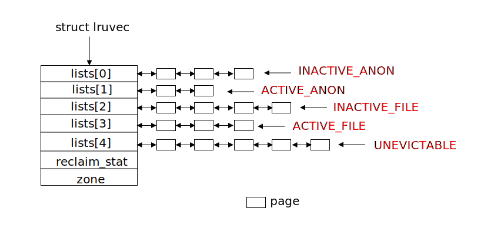
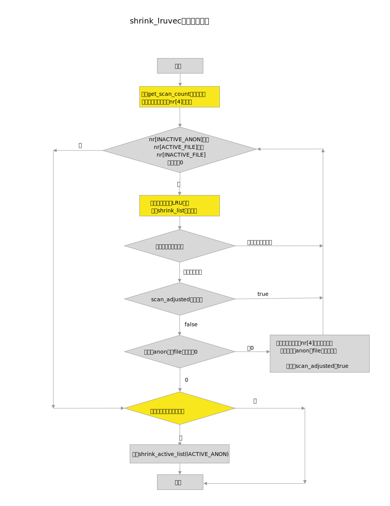

Linux内存回收操作的核心就是扫描LRU链表，完成该工作的函数名称为shrink_lruvec，本文首先介绍了LRU链表，然后详细分析了shrink_lruvec函数。

系统环境
LRU链表
LRU的缩写是Least Recently Used（最近最少使用），LRU基于局部性原理，假设最近不使用的页面再较短时间内也不会被频繁使用。当内存不足时，这些页面将成为被换出的候选者。内核使用双向链表定义LRU链表，并且根据页面类型，分为LRU_FILE和LRU_ANON，每种类型又根据页面是否活跃分为active LRU和inactive LRU，所以内核一共有5个LRU链表：
- 不活跃的匿名页面链表：
LRU_INACTIVE_ANON
- 活跃的匿名页面链表：
LRU_ACTIVE_ANON
- 不活跃的文件页面链表：
LRU_INACTIVE_FILE
- 活跃的文件页面链表：
LRU_ACTIVE_FILE
- 不可回收的页面链表：
LRU_UNEVICTABLE
LRU之所以要分成这样，是因为当系统上内存紧张时，总是优先换出page cache页面，而不是匿名页面。因为大多数情况下page cache页面不需要回写磁盘，除非页面内容被修改了，而匿名页面总是要被写入交换分区才能被换出。
在我所分析的系统内核版本上，LRU链表是按照zone来配置的，也就是说每个zone中都有一整套LRU链表，因此数据结构zone中有一个数据成员lruvec指向这个链表。枚举类型变量lru_list列举了上述各种类型的链表。
1
2
3
4
5
6
7
8
9
10
11
12
13
14
15
16
17
18
19
20
21
22
23
24
25
26
27
|
#define LRU_BASE 0
#define LRU_ACTIVE 1
#define LRU_FILE 2
enum lru_list {
LRU_INACTIVE_ANON = LRU_BASE,
LRU_ACTIVE_ANON = LRU_BASE + LRU_ACTIVE,
LRU_INACTIVE_FILE = LRU_BASE + LRU_FILE,
LRU_ACTIVE_FILE = LRU_BASE + LRU_FILE + LRU_ACTIVE,
LRU_UNEVICTABLE,
NR_LRU_LISTS
};
struct lruvec {
struct list_head lists[NR_LRU_LISTS];
struct zone_reclaim_stat reclaim_stat;
#ifdef CONFIG_MEMCG
struct zone *zone;
#endif
};
struct zone {
...
spinlock_t lru_lock;
struct lruvec lruvec;
...
};
|
在现在的服务器系统上，一般都打开了CONFIG_MEMCG配置选项，有了这个选项后，zone中的lruvec指向的链表一般为空，系统会为每个memory cgroup 分配一个lruvec，也就是说系统上有多少个memory cgroup，就会有多少套LRU链表。LRU的一套链表示意如下：

内存回收操作的核心就是扫描LRU链表，换成合适的页面，从而达到释放内存的目的。而操作LRU链表的核心函数为shrink_lruvec，接着我们就分析一下这个函数。
shrink_lruvec
该函数是一个用于释放一个内存区域zone（或者一个memory cgroup）中最近最少使用的page。其原型如下：
1
|
void shrink_lruvec(struct lruvec *lruvec, struct scan_control *sc)
|
- 第一个参数
lruvec就存放了需要扫描的LRU链表
- 第二个参数
sc是用于控制页面回收的行为
lruvec数据结构在上一节已经介绍了，下面先介绍一下scan_control这个数据结构：
1
2
3
4
5
6
7
8
9
10
11
12
13
14
15
16
17
18
19
20
21
22
23
24
25
26
27
28
29
30
31
32
33
34
35
36
37
38
39
40
41
42
43
44
45
46
47
48
|
struct scan_control {
/* Incremented by the number of inactive pages that were scanned */
unsigned long nr_scanned;
/* Number of pages freed so far during a call to shrink_zones() */
unsigned long nr_reclaimed;
/* How many pages shrink_list() should reclaim */
unsigned long nr_to_reclaim;
unsigned long hibernation_mode;
/* This context's GFP mask */
gfp_t gfp_mask;
int may_writepage;
/* Can mapped pages be reclaimed? */
int may_unmap;
/* Can pages be swapped as part of reclaim? */
int may_swap;
/* Cgroups are not reclaimed below their configured memory.low,
* unless we threaten to OOM. If any cgroups are skipped due to
* memory.low and nothing was reclaimed, go back for memory.low
*/
int may_thrash;
int memcg_low_reclaim;
int memcg_low_skipped;
int order;
/* Scan (total_size >> priority) pages at once */
int priority;
/*
* The memory cgroup that hit its limit and as a result is the
* primary target of this reclaim invocation.
*/
struct mem_cgroup *target_mem_cgroup;
/*
* Nodemask of nodes allowed by the caller. If NULL, all nodes
* are scanned.
*/
nodemask_t *nodemask;
};
|
关键成员如下：
nr_scanned： 用于返回一次回收操作共扫描的页面数量nr_reclaimed：用于返回一次回收操作共回收的页面数量nr_to_reclaim： 要回收的页面数量may_writepage：用于控制回收过程是否可以回写磁盘may_unmap：用于控制回收过程是否可以unmapmay_swap：用于控制回收过程是否可以回收匿名页面priority： 扫描LRU链表的优先级，其用于计算每次扫描页面的数量，计算方法是total_size >> priority，初始值为12，依次递减，priority数值越低，扫描的页面数量越大，相当于逐步加大扫描粒度。order：分配的阶数（2^order个页面）gfp_mask：分配掩码target_mem_cgroup： 主要回收的mem cgroup
shrink_lruvec函数的执行流程如下图：

这里稍微解释一下scan_adjusted变量控制的逻辑。当进行全局直接回收内存时，且优先级为12（DEF_PRIORITY）时，设置scan_adjusted为true。此时，一般说明系统稍微有点内存压力，且kswapd还没有被激活，所以最好一次性回收尽可能多的页面，免得后续再激活kswapd内核线程。因此即使已经回收够了足够的页面，还是要继续扫描页面，直到nr数组降到0为止。
上图中提到的活跃页面是否过少，在后续的shrink_list函数分析中会详细分析。
get_scan_count
shrink_lruvec会调用get_scan_count函数，它根据swapiness和priority优先级计算4个LRU链表中需要扫描的页面的个数，结果保存到nr数组中。
函数原型如下：
1
|
static void get_scan_count(struct lruvec *lruvec, struct scan_control *sc, unsigned long *nr);
|
nr[0]: 存放要扫描的不活跃的匿名页面个数nr[1]: 存放要扫描的活跃的匿名页面个数nr[2]: 存放要扫描的不活跃的文件页面个数nr[3]: 存放要扫描的活跃的文件页面个数
该函数的扫描规则总结如下：
- 如果系统上没有交换分区或者
swap空间，则只扫描文件页面。
- 如果不是全局回收，且
swappiness为0，则只扫描文件页面；
- 如果是全局回收，且
zone中空闲页面个数+文件页面个数小于等于高水位，那么只扫描匿名页面（说明此时该zone中主要是匿名页面）
- 如果
LRU_INACTIVE_FILE > LRU_ACTIVE_FILE，那么只扫描文件映射页面
- 如果系统压力巨大（
priority为0）时，且swappiness不为0，则anon和file也都会扫描
- 其它情况下，
anon和file也都要扫描
扫描页面多少的计算公式如下：
1
2
3
4
5
6
7
8
|
//扫描类型为：SCAN_FILE、SCAN_ANON或者SCAN_EQUAL时
scan = LRU上总页面数 >> sc->priority;
//扫描类型为：SCAN_FRACT时
scan = LRU上总页面数 >> sc->priority;
ap = swappiness* (recent_scanned[0] + 1)/ (recent_rotated[0] + 1)
fp = (200 - swappiness)* (recent_scanned[1] + 1)/ (recent_rotated[1] + 1)
scan_anon = scan * ap / (ap + fp + 1)
scan_file = scan * fp / (ap + fp + 1)
|
recent_scanned: 指最近扫描的页面数量，在扫描活跃链表和不活跃链表时，会统计到recent_scanned 变量中。recent_rotated：
- 扫描不活跃链表时，统计那些被重新移动到活跃链表中的页面数量到
recent_rotated变量中
- 扫描活跃链表时，访问引用的页面页被统计到
recent_rotated变量中
代码中使用如下结构体描述这两个变量：
1
2
3
4
5
6
7
8
9
10
11
12
|
struct zone_reclaim_stat {
/*
* The pageout code in vmscan.c keeps track of how many of the
* mem/swap backed and file backed pages are referenced.
* The higher the rotated/scanned ratio, the more valuable
* that cache is.
*
* The anon LRU stats live in [0], file LRU stats in [1]
*/
unsigned long recent_rotated[2];
unsigned long recent_scanned[2];
};
|
其中匿名页面放到数组中下标为0的位置中，文件页面放到数组中下标为1的位置中，recent_rotated/recent_scanned的比值越大，说明这些被缓存起来的页面价值越大，他们更应该留下来。
举个例子，如果recent_rotated[1]/recent_scanned[1]越小，说明LRU中的文件页面价值较小，那么更应该多扫描一些文件页面，尽量把没有价值的文件页面释放掉。根据公式，文件页面的recent_rotated越小，fp值越大，那么最后扫描的scan_file需要扫描的文件页面数量也就越大。也可以理解为：在扫描总量一定的情况下，扫描文件页面的比重更大。
shrink_list
下面来看看shrink_list函数，该函数处理各个LRU链表的回收页面工作：
1
2
3
4
5
6
7
8
9
10
11
|
static unsigned long shrink_list(enum lru_list lru, unsigned long nr_to_scan,
struct lruvec *lruvec, struct scan_control *sc)
{
if (is_active_lru(lru)) {
if (inactive_list_is_low(lruvec, lru))
shrink_active_list(nr_to_scan, lruvec, sc, lru);
return 0;
}
return shrink_inactive_list(nr_to_scan, lruvec, sc, lru);
}
|
- 第
4-8行代码处理活跃的LRU链表的，包括匿名页面和文件页面，只有当不活跃的页面比较少时，才需要调用shrink_active_list来看哪些活跃页面可以迁移到不活跃链表中
- 第
10行代码调用shrink_inactive_list扫描不活跃页面链表，并回收页面，后续会详细介绍该函数。
这里遇到了一个问题，如何判断不活跃的页面比较少，前面在分析shrink_lruvec函数时也遇到了该问题，这里就详细分析一下：
inactive_list_is_low
inactive_list_is_low的判断逻辑区分匿名页面和文件页面两种情况，我们分别就这两种情况进行讨论。
文件页面
对于文件页面非常简单，直接判断不活跃的文件页面是否小于活跃的文件页面个数。
1
2
3
4
5
6
7
8
9
10
|
static int inactive_file_is_low(struct lruvec *lruvec)
{
unsigned long inactive;
unsigned long active;
inactive = get_lru_size(lruvec, LRU_INACTIVE_FILE);
active = get_lru_size(lruvec, LRU_ACTIVE_FILE);
return active > inactive;
}
|
匿名页面
对于匿名页面稍微复杂一些，函数inactive_anon_is_low用来完成判断，它的判断区分是否开启了CONFIG_MEMCG:
- 如果没有开启
CONFIG_MEMCG时，调用函数inactive_anon_is_low_global;
- 如果开启了
CONFIG_MEMCG时，调用函数mem_cgroup_inactive_anon_is_low。
注意：在一般的服务器系统上，默认都会开启CONFIG_MEMCG。
1
2
3
4
5
6
7
8
9
10
11
12
13
14
15
16
17
18
19
20
21
|
/**
* inactive_anon_is_low - check if anonymous pages need to be deactivated
* @lruvec: LRU vector to check
*
* Returns true if the zone does not have enough inactive anon pages,
* meaning some active anon pages need to be deactivated.
*/
static int inactive_anon_is_low(struct lruvec *lruvec)
{
/*
* If we don't have swap space, anonymous page deactivation
* is pointless.
*/
if (!total_swap_pages)
return 0;
if (!mem_cgroup_disabled())
return mem_cgroup_inactive_anon_is_low(lruvec);
return inactive_anon_is_low_global(lruvec_zone(lruvec));
}
|
不管是上面哪种情况，其判断的方法如下:
1
|
inactive * inactive_ratio < active
|
对于是否打开CONFIG_MEMCG,inactive_ratio的计算方法不同：
- 未打开
CONFIG_MEMCG: 此时系统上只有全局全局的LRU链表，使用的zone数据结构中的inactive_ratio变量，该变量的值在zone初始化时就计算好了。
- 打开
CONFIG_MEMCG: 此时系统使用的是mem cgroup中的LRU链表，inactive_ratio 需要根据mem cgroup中的使用的匿名页面总数进行计算。
具体计算方法如下：
1
2
3
4
5
6
7
8
9
10
11
12
13
14
15
16
|
/*
* total target max
* memory ratio inactive anon
* -------------------------------------
* 10MB 1 5MB
* 100MB 1 50MB
* 1GB 3 250MB
* 10GB 10 0.9GB
* 100GB 31 3GB
* 1TB 101 10GB
* 10TB 320 32GB
*/
gb = zone的内存大小或者mem cgoup中的使用的匿名页面的总大小（单位为GB）
gb 大于等于1时： inactive_ratio = int_sqrt(10 * gb)
gb 小于1时，inactive_ratio = 1
|
说明：对于内存空间小于1GB的情况，inactive_ratio等于1，对于内存空间大小在1GB到10GB的情况，inactive_ratio等于3。inactive_ratio为3，表明LRU中活跃匿名页面和不活跃匿名页面的比值为3：1，也就是说在理想情况下，有25%的匿名页面保存在不活跃链表中。
mem_cgroup_inactive_anon_is_low和inactive_anon_is_low_global的代码如下：
1
2
3
4
5
6
7
8
9
10
11
12
13
14
15
16
17
18
19
20
21
22
23
24
25
26
27
28
29
30
31
|
int mem_cgroup_inactive_anon_is_low(struct lruvec *lruvec)
{
unsigned long inactive_ratio;
unsigned long inactive;
unsigned long active;
unsigned long gb;
inactive = mem_cgroup_get_lru_size(lruvec, LRU_INACTIVE_ANON);
active = mem_cgroup_get_lru_size(lruvec, LRU_ACTIVE_ANON);
gb = (inactive + active) >> (30 - PAGE_SHIFT);
if (gb)
inactive_ratio = int_sqrt(10 * gb);
else
inactive_ratio = 1;
return inactive * inactive_ratio < active;
}
static int inactive_anon_is_low_global(struct zone *zone)
{
unsigned long active, inactive;
active = zone_page_state(zone, NR_ACTIVE_ANON);
inactive = zone_page_state(zone, NR_INACTIVE_ANON);
if (inactive * zone->inactive_ratio < active)
return 1;
return 0;
}
|
Author
laoqinren
LastMod
2019-01-29
Markdown
The Markdown version »